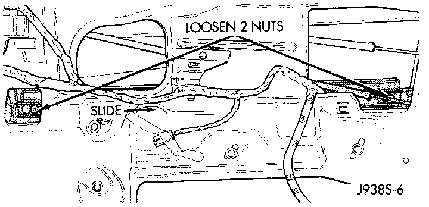
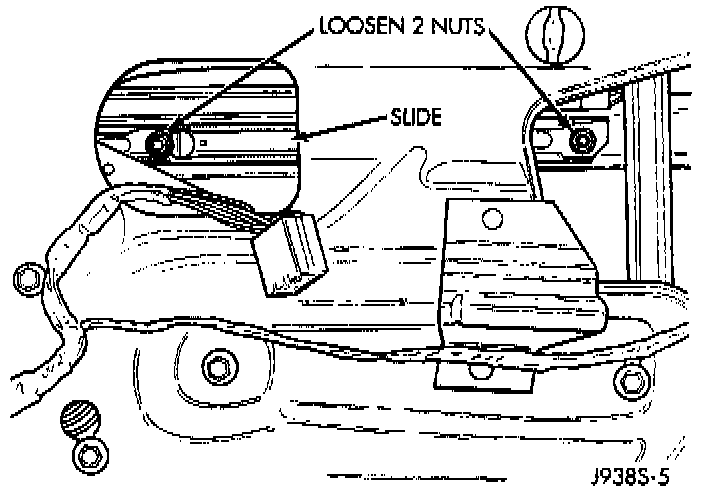
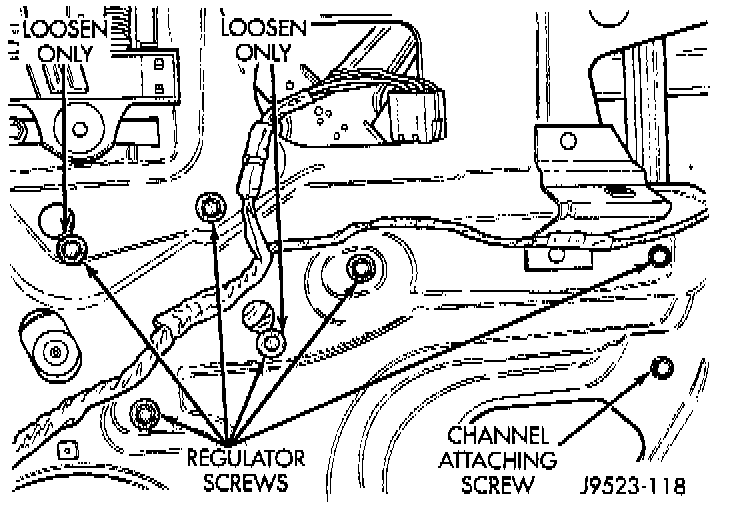

Power Window Motor: Service and Repair
REMOVALFront Door
1. Remove the front door trim panel as described under Door Module.
2. Remove the watershield from the inner door panel.
Glass Attaching Nuts:

3. Loosen the two nuts that secure the door glass to the window regulator lift plate.
4. Slide the door glass rearward to remove it from the nuts.
5. Pull the door glass to the full up position and tape the glass to the upper door window frame.
6. Unplug the wire harness connector from the power window motor.
Front Door Window Regulator:

7. Remove the four screws that secure the window regulator to the inner door panel.
8. Loosen the last two screws that secure the regulator to the inner door panel.
9. Remove the window regulator and motor assembly from inside the door.
10. To install, place the window regulator inside the door and slide the two loose screws into the slotted holes in the door inner panel.
11. Install the remaining regulator mounting screws and tighten to 12 N.m (105 in. lbs.).
12. Remove the tape used to secure the glass to the upper door window frame and lower the glass. Move the glass as far rearward into the channel as possible and push down. Tighten the two loose window regulator screws to 12 N.m (105 in. lbs.).
13. Attach the door glass by sliding the two nuts into the slotted holes on the regulator lift plate. Tighten the nuts to 12 N.m (105 in. lbs.).
14. Plug in the wire harness connector to the power window motor.
15. Use an adhesive/sealant to install the plastic watershield to the door inner panel.
16. Reverse the remaining removal procedures to complete the installation.
Rear Door
1. Remove the rear door trim panel as described under Power Window Switch.
2. Remove the watershield from the inner door panel.
Rear Door Window Track:

3. Loosen the two nuts that secure the door glass to the window regulator lift plate.
4. Slide the door glass forward to remove it from the nuts.
5. Pull the door glass to the full up position and tape the glass to the upper door window frame.
6. Unplug the wire harness connector from the power window motor.
Rear Door Window Regulator:

7. Remove the four screws that secure the window regulator to the inner door panel.
8. Loosen the last two screws that secure the regulator to the inner door panel.
9. Remove the window regulator and motor assembly from inside the door
10. To install, place the window regulator inside the door and slide the two loose screws into the slotted holes in the door inner panel.
11. Install the remaining regulator mounting screws and tighten to 12 N.m (105 in. lbs.).
12. Remove the tape used to secure the glass to the upper door window frame and lower the glass. Move the glass as far rearward into the channel as possible and push down. Tighten the two loose window regulator screws to 12 N.m (105 in. lbs.).
13. Attach the door glass by sliding the two nuts into the slotted holes on the regulator lift plate. Tighten the nuts to 12 N.m (105 in. lbs.).
14. Plug in the wire harness connector to the power window motor.
15. Use an adhesive/sealant to install the plastic watershield to the door inner panel.
16. Reverse the remaining removal procedures to complete the installation.